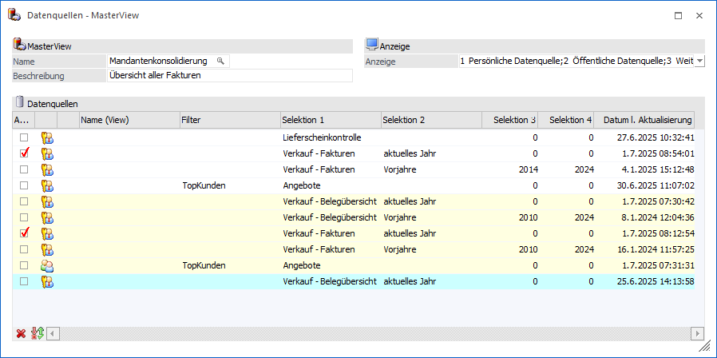
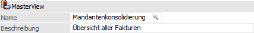
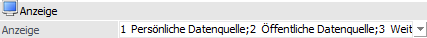
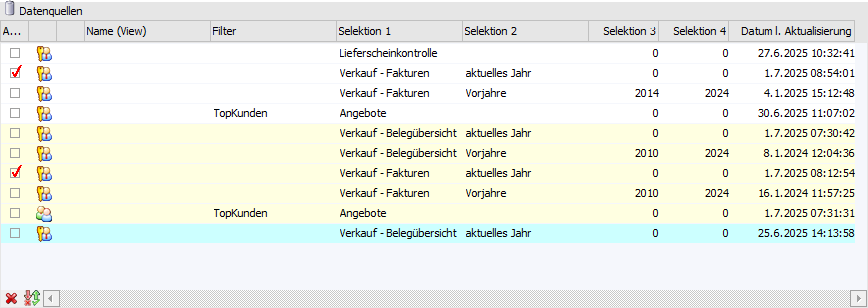
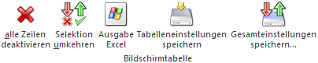

Durch Anwahl des Buttons "MasterView" in der Datenquellenverwaltung wird das Fenster "Datenquellen - MasterView" geöffnet. In diesem können für die Ausgangsauswertung neue MasterViews erzeugt und bestehende editiert werden.
Hinweis
Bei einer MasterView selbst handelt es sich um eine aktuelle Sicht auf mehrere Snapshots und / oder Views. Die Daten der Ausgabe sind immer so aktuell, wie die zu Grunde liegenden Datenquellen. Weitere Informationen zu diesem Thema können Sie dem Kapitel Die Datenquelle entnehmen.

Folgende Eingabefelder, Einstellungen und Informationen stehen zur Verfügung:
MasterView

Ø Name
An dieser Stelle erfolgt die Eingabe des Namens der MasterView.
Ø Beschreibung
In diesem Feld kann eine maximal 250stellige Bezeichnung für die MasterView hinterlegt werden.
Anzeige

Mit Hilfe der hier zur Verfügung stehenden Mehrfachauswahl kann definiert werden, welche Datenquellen dargestellt werden sollen. Die gewählte Einstellung wird hierbei benutzerspezifisch gespeichert.
ü Persönliche Datenquelle
Durch
Aktivierung dieser Option werden in der Tabelle "Datenquellen" die persönlichen
Datenquellen (Snapshots und Views) des aktuellen Mandanten angezeigt.
ü Öffentliche Datenquelle
Durch
Aktivierung dieser Option werden in der Tabelle "Datenquellen" die öffentlichen
Datenquellen (Snapshots und Views) des aktuellen Mandanten angezeigt.
ü Weitere Mandanten
Durch
Aktivierung dieser Option werden in der Tabelle "Datenquellen" auch die
Datenquellen (Snapshots und Views) von anderen Mandanten angezeigt. Die
Darstellung solcher Zeilen erfolgt mit einer gelben Unterlegung.
ü Importierte Datenquelle
Durch
Aktivierung dieser Option werden in der Tabelle "Datenquellen" importierte
Datenquellen (Snapshots) angezeigt (siehe auch Button "Datenquelle
importieren"). Die Darstellung solcher Zeilen erfolgt mit einer blauen
Unterlegung.
Hinweis
Die Anzeige von Datenquellen ist abhängig von den Rechten eines Benutzers (Mandantenberechtigung, Applikationsberechtigung, Objektberechtigung auf die WinLine LIST-Liste / den Enterprise Cube). D.h. wenn der Benutzer z.B. keine Berechtigungen für den Mandanten "300M" besitzt, so werden auch keine Datenquellen aus diesem Mandanten angezeigt.
Eine Ausnahme bildet hierbei die Darstellung von importierten Datenquellen. Diese sind vom Benutzer immer sichtbar, sobald ein grundsätzliches Zugriffsrecht auf die Auswertung besteht.
Tabelle "Datenquellen"

In der Tabelle werden alle Datenquellen (Snapshots und Views) der Ausgangsauswertung angezeigt.
Ø farbliche Hinterlegung
Mit Hilfe der folgenden farblichen Hinterlegungen wird dargestellt, aus welchem Mandanten bzw. von welchem Benutzer die Datenquelle stammt:
ü  - Datenquelle aus dem aktuellen
Mandanten
- Datenquelle aus dem aktuellen
Mandanten
ü  - Datenquelle eines anderen Mandanten
- Datenquelle eines anderen Mandanten
ü  - Importiere Datenquelle
- Importiere Datenquelle
Ø Auswahl
Wurde ein MasterView-Name vergeben, so kann über diese Checkbox definiert werden, welche Snapshots und / oder Views in der MasterView zusammengeführt werden sollen.
Ø Privat / Öffentlich
Hier wird der Typ der Zeile mit Hilfe eines Icons dargestellt.
ü - Privat
Es handelt sich um eine private
Datenquelle.
ü - Öffentlich
Es handelt sich um eine
öffentliche Datenquelle.
Ø Typ [optional]
Hier wird dargestellt, ob es sich um eine öffentliche oder eine private Datenquelle handelt. Die Zahl hinter dem Wort "Privat" gibt die Nummer des Benutzers an.
Ø Typ (View)
Handelt es sich bei der Datenquelle um eine View, so wird auf
dieses mit Hilfe des Icons  hingewiesen.
hingewiesen.
Ø Name (View)
Hier wird der Name der View angezeigt.
Ø Filter
In dieser Spalte wird der Filter angezeigt, mit Hilfe dessen die Datenquelle erzeugt wurde.
Ø Selektion 1 bis 4
An dieser Stelle werden die Selektionen der Datenquellen (Snapshots) angezeigt. Hierbei handelt es sich bei Selektion 1 und 2 um Textfelder (100 Zeichen) und bei Selektion 3 und 4 um Zahlenfelder (10stellig ohne Nachkommastellen).
Ø Datum l. Aktualisierung
In dieser Spalte wird bei Snapshots das Datum der letzten Aktualisierung dargestellt. Views sind eine Sicht auf die Daten und erhalten daher den Eintrag "aktuell".
Ø Datensätze [optional]
Hier wird die Anzahl der Datensätze dargestellt, welche sich in der Datenquelle befinden.
Ø Mandant [optional]
Hier wird der Mandant angezeigt, von welchem die Datenquelle erzeugt wurde.
Ø Action Server [optional]
An dieser Stelle wird angezeigt, ob es für den Snapshot bereits einen Action Server-Eintrag - für eine automatische Aktualisierung - gibt.
Tabellenbuttons

Ø alle Zeilen deaktivieren
Durch Anwahl dieses Buttons wird die Checkbox "Auswahl" bei allen Snapshots und Views entfernt.
Ø Selektion umkehren
Durch Anklicken des Buttons "Selektion umkehren" werden die Checkboxen der Spalte "Auswahl" in das Gegenteil gekehrt.
Ø Ausgabe Excel
Durch Anwahl des Buttons "Ausgabe Excel" wird der Inhalt der Tabelle an Microsoft Excel übergeben.
Ø Tabelleneinstellungen speichern
Die Spalten einer Tabelle können grundsätzlich an beliebige Positionen verschoben, bzw. in der Breite entsprechend angepasst werden. Durch Anwahl des Buttons "Tabelleneinstellungen speichern" werden die Einstellungen benutzerspezifisch gespeichert und bei dem nächsten Aufruf des Programmpunktes wieder vorgeschlagen.
Ø Gesamteinstellungen speichern
Im Gegensatz zu "Tabelleneinstellungen speichern" können mit "Gesamteinstellungen speichern" mehrere Tabellenaufbauten gespeichert und nach Wunsch geladen werden. Zusätzlich werden Sonderfunktionen der Tabelle (z.B. "Spalte gruppieren") ebenfalls bei der Speicherung bedacht.
Buttons
Ø Ok
Durch Anwahl des Buttons "Ok" bzw. der Taste F5 wird die MasterView neu angelegt oder der Aufbau einer bestehenden aktualisiert.
Hinweis
Der Button wird nur freigeschaltet, wenn ein MasterView-Name vergeben und mindestens 2 Snapshots und / oder Views ausgewählt wurden.
Achtung
Eine MasterView prüft die zusammengeführten Daten nicht auf Logik oder mögliche Überschneidungen ab! D.h. sind z.B. in 2 Snapshots identische Daten enthalten (z.B. 1x die Verkaufszahlen von 02.2025 und 1x die Verkaufszahlen des gesamten Jahres 2025) und werden diese zusammengeführt, so wären in der entstandenen MasterView die Werte für 02.2025 doppelt so hoch, wie tatsächlich erzielt.
Ø Ende
Bei Anwahl des Buttons "Ende" bzw. der Taste ESC wird das Fenster geschlossen und alle nicht gespeicherten Änderungen verworfen.
Ø Übersicht
Mit Hilfe dieses Buttons wird eine tabellarische Vorschau über den Inhalt der MasterView, gemäß aktueller Auswahl, am Bildschirm ausgegeben.
Hinweis
Der Button wird nur freigeschaltet, wenn ein MasterView-Name vergeben und mindestens 2 Snapshots und / oder Views ausgewählt wurden.
Ø Zurück
Befindet man sich in der MasterView-Vorschau (siehe Button "Übersicht"), so kann durch Anwahl des Buttons "Zurück" wieder in die Anzeige der Datenquellen gewechselt werden.